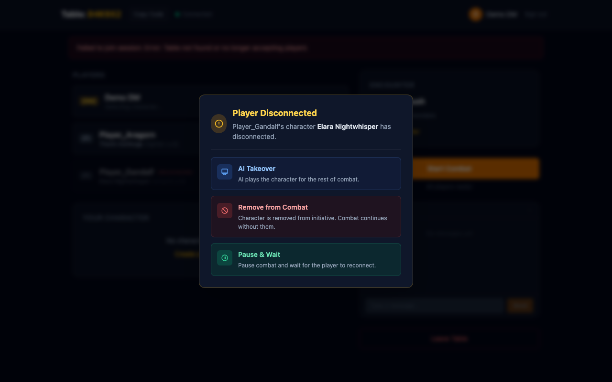
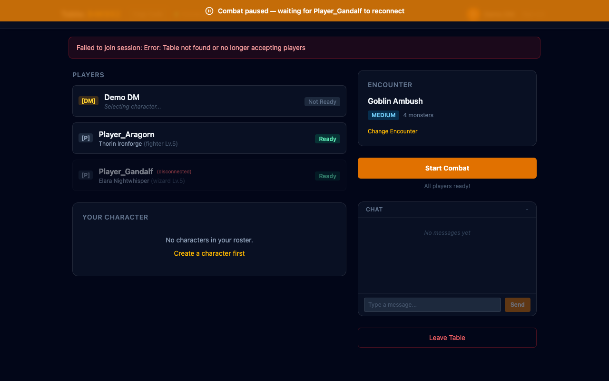
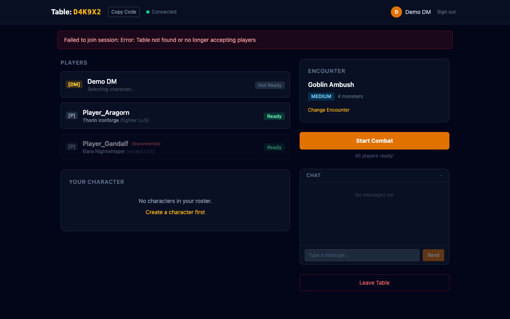

Feature branch: feat/disconnect-prompt | Closes #65
When a player disconnects during multiplayer combat, the DM now gets a modal prompt with three options instead of automatic AI takeover. This gives the DM full control over how to handle the situation.
When a player disconnects during their turn, the DM sees a modal with three color-coded options: AI Takeover (blue), Remove from Combat (red), and Pause & Wait (green). Shows the disconnected player's name and character.

If the DM chooses "Pause & Wait", all clients see an amber banner at the top: "Combat paused — waiting for [player] to reconnect." Combat actions are disabled until the player returns.

The lobby player list shows disconnected players with a red "(disconnected)" label. The DM can see which players are still connected at a glance.

decideAction), remove (new removeUnit action), pause (persists state, broadcasts combat_paused)